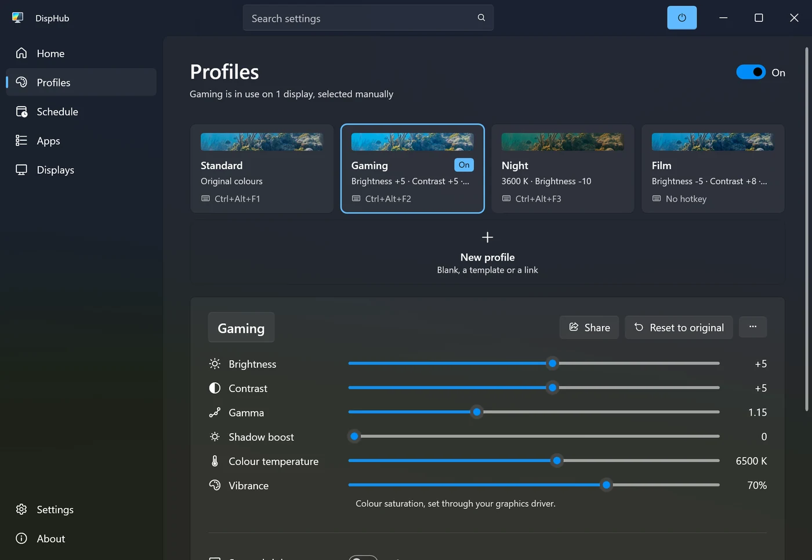
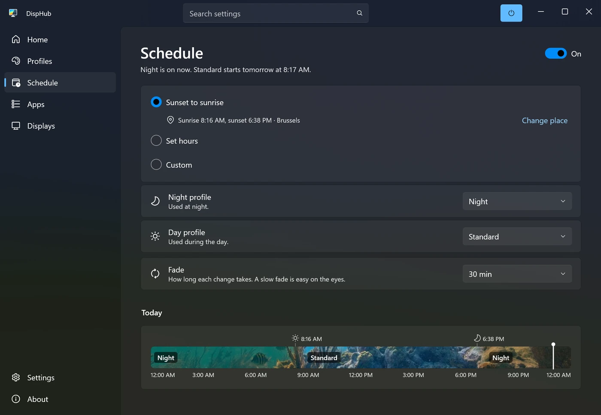
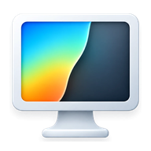

DispHub
Perfis de cor para a sua tela.
Troque com um clique, um atalho, por app ou com um agendamento.
Perfis
Um visual para cada momento.
Brilho, contraste, gama, temperatura de cor e vibrance, salvos como perfis.

Atalhos
Troque na hora.
Funciona com qualquer jogo e qualquer app.
Apps
Cada app com seu próprio visual.
Seu perfil enquanto o app está em primeiro plano, cores normais quando você troca.

Agendamentos
Agende seus perfis.
Troque ao pôr do sol e ao nascer do sol, ou nos horários que você escolher.


Baixe o DispHub
Grátis na Microsoft Store, com uma semana de Pro para testar. Pro é um upgrade de compra única.